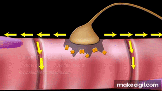
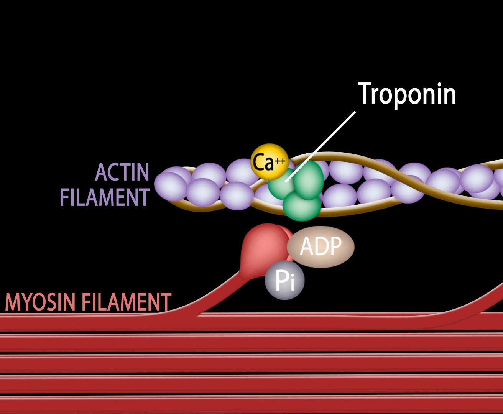
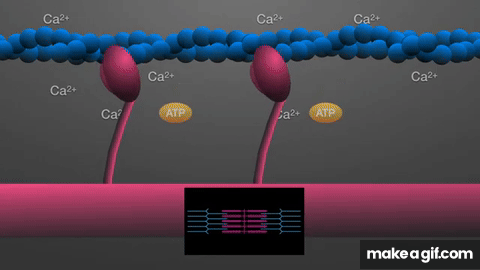

Neuromuscular Junction Events
NMJ Signal Transmission
Animation — ACh Release & End-Plate Depolarization

The axon terminal releases acetylcholine (orange) into the synaptic cleft. ACh binds receptors on the motor end plate, and the depolarization wave (yellow arrows) spreads across the sarcolemma.
Excitation-Contraction Coupling
T-Tubule & Sarcoplasmic Reticulum
Video — Excitation-Contraction Coupling
Follow the action potential down the T-tubule, the voltage sensors triggering the SR, the Ca²⁺ flood into the sarcoplasm, and calcium binding troponin to launch contraction.
Cross-Bridge Cycle (Power Stroke)
Myosin-Actin Interaction
Molecular Detail — Cross-Bridge Attachment

Ca²⁺ binds troponin (green) on the actin filament (purple), exposing the binding site. The myosin head (red) attaches, still carrying ADP + Pi from the previous ATP hydrolysis, ready for the power stroke.
Sliding Filament Mechanism
Sarcomere Contraction & Relaxation
3D Molecular Animation — Cross-Bridges in Motion

Watch the myosin heads (pink) grab the actin filament (blue), pivot during the power stroke, and reset — powered by ATP and triggered by Ca²⁺. The inset tracks sarcomere shortening.